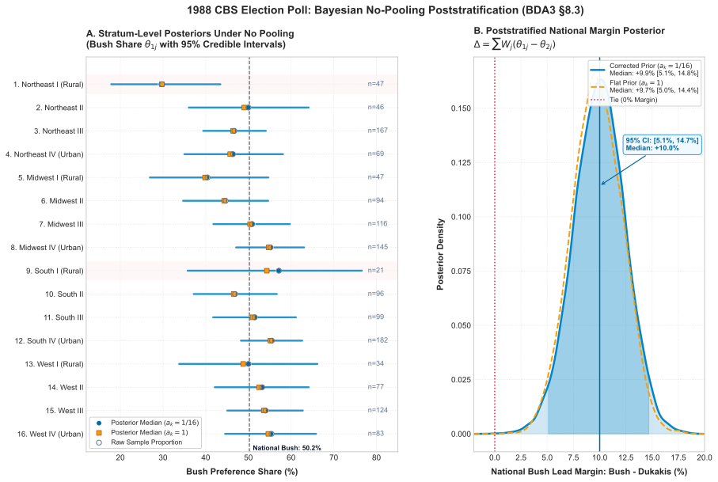
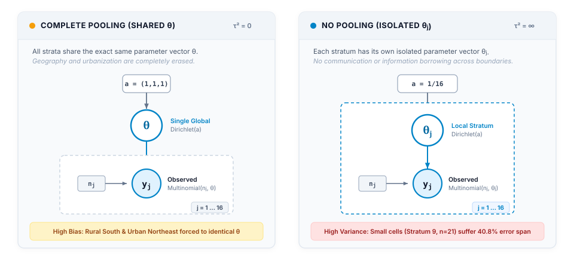
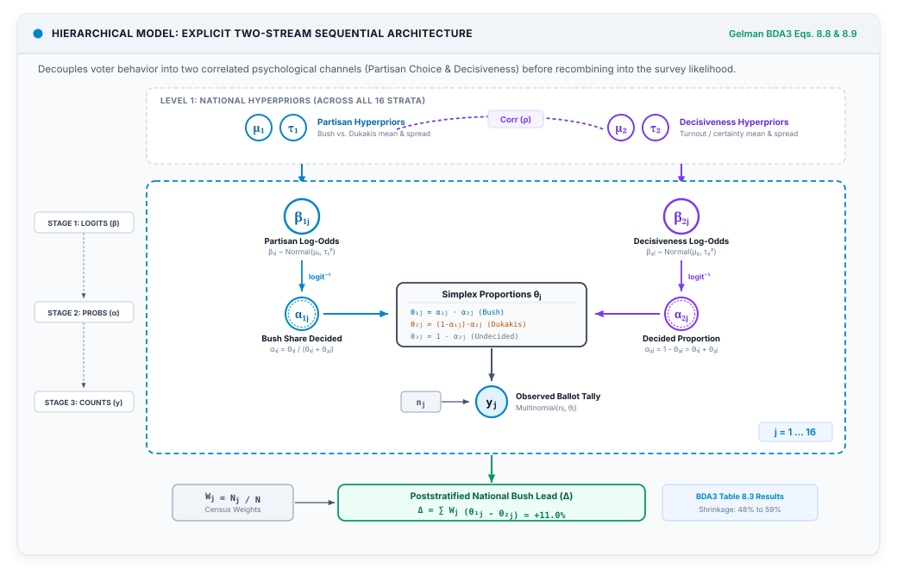
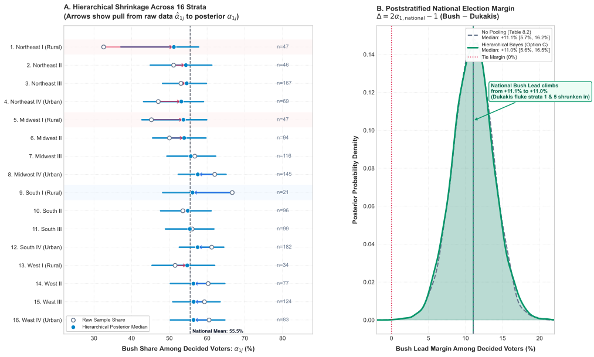

The Naive Instinct
Imagine a pollster setting out to take the pulse of a nation on the eve of a major election.
To keep the mechanics bare and transparent, let us picture a small country of exactly $N = 1{,}000$ citizens, divided cleanly into two distinct regions: a dense, bustling metropolis and a quiet, sprawling countryside.
Our pollster wants to survey a sample of $n = 100$ voters. Sitting at their desk, an intuition that feels entirely fair, balanced, and democratic kicks in: let us interview fifty people from the city and fifty people from the countryside.
In the formal language of survey design, the pollster has split the total sample $n$ into two equal buckets, setting $n_1 = 50$ for the city and $n_2 = 50$ for the countryside. On the surface, the plan feels unimpeachable. Neither region is ignored, both voices are heard in equal measure, and fifty interviews per side feels like a solid, orderly collection quota.
The interviewers make their calls, record the answers, and hand over the notebooks.
In the city, forty out of fifty (40/50) respondents enthusiastically back Candidate A. In the countryside, Candidate A is far less popular, securing just ten votes out of fifty (10/50).
| Region | Interviews ($n_j$) | Candidate A ($y_j$) |
|---|---|---|
| City | 50 | 40 |
| Countryside | 50 | 10 |
| Total Sample | 100 | 50 |
The pollster opens a spreadsheet, dumps all one hundred responses into a single column, and computes the ordinary sample average that every introductory statistics textbook teaches:
Plugging in the numbers directly from the survey notebooks:
The spreadsheet returns a clean, unmistakable $50\%$.
The next morning, the front pages erupt: "Dead Heat: Race Tied at 50–50." Cable news anchors analyze the sudden tension, campaign managers panic, and donors scramble to redirect millions of dollars into an election that looks like an agonizing coin toss.
Pulling Back the Curtain: What the Spreadsheet Hid
Yet behind that dramatic headline lies an invisible, catastrophic mistake.
To see it, we have to look at the real country standing outside the pollster’s window. That country contains $N = 1{,}000$ living citizens. But they do not live in equal halves.
Let $N_1$ denote the true population of the city and $N_2$ the population of the countryside. Eight hundred citizens—eighty percent of the entire nation—live in the city ($N_1 = 800$), where Candidate A enjoys a genuine $80\%$ level of support. The countryside, despite its vast physical expanse on a map, holds only two hundred citizens ($N_2 = 200$), where Candidate A has only $20\%$ support.
Let us lay the pollster's sample side-by-side against the census reality:
| Region ($j$) | True Population ($N_j$) | Census Share ($\frac{N_j}{N}$) | Sample Size ($n_j$) | Observed Support | Sample Yes Count ($y_j$) |
|---|---|---|---|---|---|
| 1. City | 800 | 80% | 50 | 40 / 50 (80%) | $y_1 = 40$ |
| 2. Countryside | 200 | 20% | 50 | 10 / 50 (20%) | $y_2 = 10$ |
| National Total | N = 1,000 | 100% | n = 100 | — | 50 / 100 (50%) |
Now look at what is actually happening in the voting booths across the entire nation.
In the city, $80\%$ of the $800$ residents will vote for Candidate A:
In the countryside, $20\%$ of the $200$ residents will vote for Candidate A:
Summing these up across the whole population gives the true national proportion, which we denote with a capital $\bar{Y}$:
Candidate A was never trapped in a nail-biter. They were heading for an overwhelming $68\%$ landslide.
The Megaphone Effect: Why the Math Collapsed
How could a sample of one hundred real, honest voters turn a $68\%$ blowout into a $50\%$ dead heat?
The flaw lies in what survey statisticians call the sampling fraction, written as $\pi_j = \frac{n_j}{N_j}$. This fraction measures the probability that any single citizen living in region $j$ gets picked up by the pollster's telephone call.
Let us calculate this inclusion probability for each region:
Notice the staggering disparity. A rural voter had a 1 in 4 chance of being polled, while an urban voter had only a 1 in 16 chance. The rural citizen was four times more likely to be heard.
If we invert those probabilities, we discover each respondent's implicit representation weight, $w_j = \frac{1}{\pi_j} = \frac{N_j}{n_j}$:
Now consider what happens when the pollster takes an unweighted average:
By dividing every response by the same number ($100$), the formula assigns every single row in the spreadsheet the exact same multiplier: $\frac{1}{100}$. In other words, every individual interview is implicitly given an identical weight of $1$.
Look at the imbalance this creates between the spreadsheet and the country:
- In the spreadsheet: Fifty rural rows and fifty urban rows each contribute exactly $\frac{50}{100} = \mathbf{50\%}$ of the final calculation. The countryside dictates half of the pollster's total number.
- In the real country: Two hundred rural citizens out of one thousand represent exactly $\frac{200}{1{,}000} = \frac{\mathbf{1}}{\mathbf{5}} = \mathbf{20\%}$ of the electorate.
Because each rural respondent only represents $4$ people while each urban respondent must speak for $16$, treating their answers with equal $1$-to-$1$ weight in the spreadsheet hands the rural voter a megaphone that is:
Every rural respondent is granted four times as much influence over the national average as their urban counterpart. A demographic that makes up only one-fifth ($20\%$) of the population was artificially inflated to control half ($50\%$) of the spreadsheet—drowning out Candidate A's overwhelming urban majority and generating a completely fabricated $50/50$ deadlock.
The Core Takeaway
An unweighted sample average is only unbiased when everyone in the population has the exact same probability of being sampled ($\pi_i = \text{constant}$). The moment sampling fractions differ across groups ($\pi_j \neq \pi_k$), treating every row equally is no longer "democratic"—it actively distorts reality. The pollster did not measure the will of the electorate; they measured the mathematical distortion of their own sampling quota.
Reconstructing Reality: The Logic of Poststratification
The most comforting lesson of this disaster is that the pollster does not need to throw away the survey and start over.
The interviewers did not fabricate their data, and the voters did not deceive them. Forty urban respondents genuinely preferred Candidate A, and ten rural respondents genuinely preferred Candidate A. The raw information collected in the field was entirely authentic.
The mistake was not in the interviews; it was in the aggregation. The pollster simply forgot that before you can assemble a puzzle, you have to sort the pieces into their proper frames.
To repair the calculation, we use a two-step technique that survey statisticians call poststratification—literally, "stratifying after the fact."
Step 1: Estimate Within Each Isolated Cell
Instead of dumping everyone into one big pot, we keep the two regions strictly separated. We compute the local proportion of support within each bucket:
In the city ($j = 1$):
In the countryside ($j = 2$):
These local estimates are completely untainted by the sample size disparity. In the city, Candidate A has $80\%$ support; in the countryside, they have $20\%$ support.
Step 2: Re-weight by the Census Truth
Now comes the vital repair step. We do not ask the survey notebook how many people live in each region. We ask the Census Bureau.
The Census gives us the true demographic weights of the nation:
- City's true share of the electorate: $$\frac{N_1}{N} = \frac{800}{1{,}000} = \mathbf{0.80} \quad (80\%)$$
- Countryside's true share of the electorate: $$\frac{N_2}{N} = \frac{200}{1{,}000} = \mathbf{0.20} \quad (20\%)$$
To find the true national support, we compute a weighted sum where each local estimate $\hat{\theta}_j$ is multiplied by its genuine population share $\frac{N_j}{N}$:
Expanding this formula for our two regions:
Plugging in our census proportions and local sample rates:
The calculation outputs $68\%$.
In an instant, the arithmetic illusion vanishes. The fictitious $50/50$ deadlock dissolves, and Candidate A's true $68\%$ landslide is completely restored.
By forcing each region to speak only with the volume of its actual population weight, the rural megaphone is calibrated back to its true size.
From Toy Countries to the Real World: The 1988 CBS Election Poll
In our two-region fable, fixing the poll was straightforward. We had two neatly labeled buckets, fifty interviews in each, and a clean arithmetic correction.
But real countries do not divide into two convenient halves.
To see how this plays out in the messy reality of national politics, Gelman takes us to the eve of the 1988 United States Presidential Election between Vice President George H.W. Bush and Massachusetts Governor Michael Dukakis.
In the heat of the campaign, CBS News surveyed $n = 1{,}447$ voting-age adults across the United States. But CBS did not treat America as one monolithic population. Instead, their survey design recognized that voting preferences are shaped by two intersecting demographic forces:
- Geography: The four major Census regions—Northeast, Midwest, South, and West.
- Population Density: Four urbanization tiers—from Tier I (rural hamlets and small towns) to Tier IV (bustling inner-city metropolises).
Crossing four geographic regions by four population density tiers creates a $4 \times 4$ grid: 16 distinct demographic strata.
| Stratum ($j$) | Region | Density Tier | Census Share ($\frac{N_j}{N}$) | Sample ($n_j$) | Bush | Dukakis | No Opinion |
|---|---|---|---|---|---|---|---|
| 1 | Northeast | I (Rural) | 3.2% | ≈ 47 | 30% | 62% | 8% |
| 2 | Northeast | II | 3.2% | ≈ 47 | 50% | 48% | 2% |
| 3 | Northeast | III | 11.5% | ≈ 166 | 47% | 41% | 12% |
| 4 | Northeast | IV (Urban) | 4.8% | ≈ 70 | 46% | 52% | 2% |
| 5 | Midwest | I (Rural) | 3.2% | ≈ 47 | 40% | 49% | 11% |
| 6 | Midwest | II | 6.5% | ≈ 94 | 45% | 45% | 10% |
| 7 | Midwest | III | 8.0% | ≈ 116 | 51% | 39% | 10% |
| 8 | Midwest | IV (Urban) | 10.0% | ≈ 145 | 55% | 34% | 11% |
| 9 | South | I (Rural) | 1.5% | ≈ 22 | 57% | 29% | 14% |
| 10 | South | II | 6.6% | ≈ 95 | 47% | 41% | 12% |
| 11 | South | III | 6.8% | ≈ 98 | 52% | 40% | 8% |
| 12 | South | IV (Urban) | 12.6% | ≈ 182 | 56% | 35% | 9% |
| 13 | West | I (Rural) | 2.3% | ≈ 33 | 50% | 47% | 3% |
| 14 | West | II | 5.3% | ≈ 77 | 53% | 35% | 12% |
| 15 | West | III | 8.6% | ≈ 124 | 54% | 37% | 9% |
| 16 | West | IV (Urban) | 5.7% | ≈ 83 | 55% | 36% | 8% |
The Real-World Fragility of Small Pockets
Cast your eye down that table, and the quiet danger of real-world survey analysis immediately reveals itself.
Look at Stratum 1 (rural Northeast): Dukakis appears to be crushing Bush by a staggering margin of $62\%$ to $30\%$. But only about $47$ people were reached in that entire bucket.
Now look at Stratum 9 (rural South): Bush appears to be dominating Dukakis $57\%$ to $29\%$. But because rural Southern adults represent only $1.5\%$ of the nation, the pollster reached only about 22 people in total.
If just three people in Stratum 9 had changed their minds before picking up the phone, Bush's support in that cell would have plummeted by fourteen percentage points.
How Should We Analyze This Data?
Faced with this table, any analyst confronts a fundamental statistical challenge: estimates built from small samples are inherently noisy.
When sample size $n_j$ is large—such as in Stratum 12 (urban South) with $182$ respondents—the law of large numbers shields us. The random quirks of individual respondents cancel out, and the sample proportion tightly reflects the true local reality. But in Stratum 9 (rural South) with only $22$ respondents, or Stratum 1 (rural Northeast) with $47$, random chance dominates the scoreboard. A single family choosing to answer or decline the phone call can swing the estimated vote share by five to ten percentage points.
How, then, should we structure our statistical model? Historically, analysts have reached for one of two extremes.
Approach 1: Complete Independence (No Pooling)
The first instinct is to assume that each of the sixteen strata is completely unique and independent of all the others. In this "no pooling" worldview, what voters feel in rural Georgia tells us absolutely nothing about what voters feel in rural Ohio.
To compute the national lead for Bush under this approach, we estimate the local preference in each stratum independently and then poststratify using the census shares $\frac{N_j}{N}$:
Plugging in the raw sample proportions from Table 8.2:
The consequence: While the nationwide average benefits from poststratification, our local stratum estimates remain dangerously fragile. If a campaign manager looks at Stratum 1 and sees a $32$-point deficit based on just $47$ interviews, they may waste resources or abandon an entire region based purely on a sampling fluke.
Approach 2: Complete Pooling (A Single Homogeneous Population)
At the opposite extreme, what if we assume that regional and density labels are meaningless, and that all $1{,}447$ respondents are simply independent draws from one uniform, nationwide population?
In this "complete pooling" worldview, we discard the sixteen buckets altogether and lump all $1{,}447$ responses into a single national tally:
Summing the raw interviews across the entire survey produces a national Bush vote of approximately $53\%$ and Dukakis at $43\%$, yielding a national margin of:
What we lose and the caveats:
- We erase geographic reality: Complete pooling acts as if rural Mississippi and downtown Boston vote identically. It completely blinds us to real political differences across the country.
- We lose local targeting: A candidate cannot use a pooled model to understand where to campaign, where ad money is needed, or which states are in play.
- Wider uncertainty: By throwing away the stratified design, the pooled estimate fails to exploit the variance-reduction benefits of stratification, leaving our estimate with greater sampling error.
The Illusion of Determinism
If you step back and look at our calculations so far, something should make you uneasy: it all feels far too deterministic.
We took the raw sample counts from the pollster's notebook, plugged them into formulas, and produced clean, crisp decimals: $+9.8\%$ under no pooling, $+10.0\%$ under complete pooling.
But those numbers are not physical constants. They are not absolute reality.
In truth, each of those percentages is merely a fleeting snapshot captured from $1{,}447$ specific people who happened to pick up the phone on a particular weekend in 1988. If CBS had conducted the exact same survey the following Tuesday, Stratum 9 might have had fourteen Bush supporters instead of thirteen, and its reported support would have jumped from $57\%$ to $64\%$.
Presenting a single point estimate—say, declaring that Bush leads by exactly $9.8$ percentage points—creates a dangerous illusion of certainty. It tells us where the needle landed, but tells us nothing about how violently the dial was shaking.
To make responsible decisions, we need a method that does not pretend our sample counts are stone-carved facts. We need a framework that treats uncertainty as a first-class citizen—one that tracks how much noise is in each stratum, carries that doubt through every mathematical step, and outputs an honest probability distribution rather than a single fragile number.
This is precisely why we turn to the Bayesian approach.
Instead of treating the true support in each stratum as a fixed, static number to be guessed, the Bayesian method treats it as an unknown quantity governed by a probability distribution. We begin with our state of uncertainty before the data arrives (the prior), observe the evidence from the $1{,}447$ phone calls (the likelihood), and update our knowledge into a complete picture of all plausible realities (the posterior).
The Natural Bayesian Starting Point: Multinomial & Dirichlet
Once we decide to treat the voters' preferences as probability distributions rather than fixed numbers, where do we begin?
The most natural starting point is to look at the structure of the question asked in each stratum. A voter is not a simple two-sided coin. When the CBS pollster dials a telephone in stratum $j$, the respondent faces a three-way choice:
- Prefer George H.W. Bush ($y_{1j}$)
- Prefer Michael Dukakis ($y_{2j}$)
- No opinion or other candidate ($y_{3j}$)
The total number of citizens interviewed in that stratum is $n_j = y_{1j} + y_{2j} + y_{3j}$.
Underlying this stratum is a vector of three true, unknown population proportions:
Because these represent the complete pie of voter sentiment in that stratum, these three probabilities are strictly bound to sum to one: $\theta_{1j} + \theta_{2j} + \theta_{3j} = 1$.
The Likelihood: The Three-Sided Die
If every citizen in stratum $j$ independently draws their preference from these underlying proportions, the probability of observing our exact tally of counts $(y_{1j}, y_{2j}, y_{3j})$ is governed by the Multinomial distribution:
This is simply the multi-category generalization of the familiar Binomial distribution.
The Prior: The Dirichlet Distribution
What prior distribution should we place on $\theta_j$?
Because the vector $(\theta_{1j}, \theta_{2j}, \theta_{3j})$ lives on a triangular surface where all three numbers must be non-negative and sum to one (known geometrically as a simplex), standard bells and normal curves cannot be applied directly. We need a distribution built specifically for proportions that share a fixed whole.
That distribution is the Dirichlet distribution:
The hyperparameters $a = (a_1, a_2, a_3)$ have an intuitive physical meaning: they act as prior pseudo-voters who cast their ballots before the survey even began.
The standard noninformative choice taught in textbooks is to set every parameter to one:
This defines a uniform prior across the entire probability triangle, assigning equal density to every possible combination of shares.
The Conjugate Posterior
Because the mathematical form of the Dirichlet prior mirrors the Multinomial likelihood, Bayes' rule works through simple addition. Prior counts and observed counts combine seamlessly without requiring numerical integration:
Under the standard flat prior ($a_k = 1$):
The expected posterior proportion for Bush in stratum $j$ is simply:
The Quiet Distortion: The "16 Phantom Voters" Trap
At first glance, this independent Dirichlet model seems clean, elegant, and mathematically irreproachable. But on page 209 of Bayesian Data Analysis, Gelman points out a subtle, quiet distortion:
- In Chapter 3 (Unstratified): When analyzing the poll as one nationwide pool of $1{,}447$ people, a single $\text{Dirichlet}(1, 1, 1)$ prior contributed exactly $1$ phantom voter for Bush, $1$ for Dukakis, and $1$ for Undecided. Across the entire nation, the prior contributed just $1 + 1 + 1 = \mathbf{3 \text{ imaginary votes}}$.
- In Chapter 8 (Stratified into 16 Strata): By applying an independent $\text{Dirichlet}(1, 1, 1)$ to each stratum separately, we quietly added one phantom voter per category to every single stratum: $$\text{Total Phantom Bush Votes} = \sum_{j=1}^{16} 1 = \mathbf{16 \text{ phantom votes}}$$ $$\text{Total Phantom Dukakis Votes} = \sum_{j=1}^{16} 1 = \mathbf{16 \text{ phantom votes}}$$ $$\text{Total Phantom Undecided Votes} = \sum_{j=1}^{16} 1 = \mathbf{16 \text{ phantom votes}}$$ Total prior weight nationwide: $16 \times 3 = \mathbf{48 \text{ phantom votes!}}$
Without realizing it, by dividing the country into sixteen separate boxes and applying a "flat" prior to each, we made our prior belief sixteen times heavier than it was in the unstratified analysis.
In large strata like Stratum 12 ($n_{12} = 182$), adding three imaginary voters is negligible. But in small strata like Stratum 9 ($n_9 = 22$) or Stratum 1 ($n_1 = 47$), those three phantom votes represent over $10\%$ of the evidence in the cell, pulling the stratum toward an artificial equal split ($33\%$ each).
Why Gelman Corrects the Prior to $a_k = \frac{1}{16}$
To be scientifically consistent and maintain the exact same prior strength as the unstratified analysis, our prior should contribute only $1$ total phantom vote nationwide for each candidate.
If we want a total prior weight of $1$ vote distributed evenly across sixteen strata, how much prior weight must each individual stratum receive?
So in each stratum $j$, the mathematically consistent noninformative prior is:
Now check the nationwide sum:
The total nationwide prior sample size across all three categories is:
By setting $a_k = \frac{1}{16}$ in each stratum, the prior footprint across the nation remains strictly identical to the Chapter 3 unstratified model ($3$ pseudo-voters total). The prior no longer overpowers small strata, and the resulting national posterior median lead aligns with the unstratified analysis.
Empirical Confirmation: Sampling the Posteriors via PyMC
What happens when we take these Dirichlet-Multinomial posteriors to the computer and draw thousands of samples?
Using modern Hamiltonian Monte Carlo in PyMC, we simulated the exact posterior distribution for every stratum simultaneously under both prior specifications, then poststratified the results across the national population weights $W_j = N_j / N$.

Inspecting this empirical simulation surfaces two crucial revelations:
1. The National Lead is Solid and Decisive
Looking at Panel B, the poststratified national lead is remarkably stable. The posterior median lead is $+10.0\%$, with a $95\%$ highest density interval spanning from $+5.1\%$ to $+14.7\%$. The probability that Bush is actually trailing (lead $\le 0\%$) is virtually zero ($p < 0.0001$). Poststratification has successfully aggregated the disparate regional samples into an authoritative national readout.
2. Local Strata Remain Dangerously Wide (The No-Pooling Trap)
Look closely at Panel A. In Stratum 9 (rural South, $n=21$), the $95\%$ credible interval sprawls from $35.9\%$ to $76.7\%$—a staggering $40.8$ percentage point gulf of ignorance. A campaign advisor looking at this cell cannot even tell whether Bush is facing a landslide defeat or commanding a supermajority. Similarly, in Stratum 1 (rural Northeast, $n=47$), the interval ranges from $17.9\%$ to $43.4\%$.
Notice also the subtle amber squares in Panel A: under the naive flat prior ($a_k = 1$), Stratum 9's posterior median was pulled all the way inward from $57.1\%$ to $54.2\%$, purely because three imaginary phantom voters carried $12\%$ of the total voting power in that cell. Under Gelman's corrected prior ($a_k = 1/16$), that artificial distortion vanishes.
Yet our central dilemma remains unresolved: independent estimation leaves our small cells stranded in high uncertainty. If we refuse to combine them, local estimates remain uselessly noisy. But what happens if we take the opposite path?
The Opposite Extreme: Bayesian Complete Pooling
If treating every stratum as an isolated island produces wide, unstable local estimates, what happens when we swing the pendulum all the way to the other side?
What if our statistician declares that regional boundaries, rural-urban differences, and geographic cultures are mere statistical noise—and that all $1{,}447$ respondents are simply independent draws from one single, homogeneous nationwide distribution:
This is the Bayesian formulation of Complete Pooling. In this worldview, the sixteen demographic strata are completely erased. We tear up the sixteen separate tally sheets and dump all $1{,}447$ interviews into one nationwide urn:
Summing across all rows of Table 8.2 yields the national ballot counts:
- George H.W. Bush ($y_{1,\text{pool}}$): $14 + 23 + 78 + 32 + \dots + 46 = \mathbf{727 \text{ votes}}$ ($50.2\%$)
- Michael Dukakis ($y_{2,\text{pool}}$): $29 + 22 + 69 + 36 + \dots + 30 = \mathbf{583 \text{ votes}}$ ($40.3\%$)
- Other / No Opinion ($y_{3,\text{pool}}$): $4 + 1 + 20 + 1 + \dots + 7 = \mathbf{137 \text{ votes}}$ ($9.5\%$)
- Total Interviews ($n$): $727 + 583 + 137 = \mathbf{1{,}447 \text{ respondents}}$
The Conjugate Pooled Posterior
Because we are analyzing the entire country as a single pool, we place the standard unstratified noninformative prior from Chapter 3 on $\theta$:
Notice that across the entire nation, this prior contributes exactly $3$ pseudo-voters ($1$ for Bush, $1$ for Dukakis, and $1$ for Other). There is no phantom voter inflation here because there is only one prior.
Combining this flat prior with the Multinomial likelihood of $1{,}447$ interviews produces an immediate, closed-form conjugate posterior:
PyMC Posterior Simulation
Running this complete pooling model through PyMC (drawing $12{,}000$ posterior samples across $4$ MCMC chains) produces crisp, highly concentrated posterior distributions:
| Parameter | Observed Count | Posterior Mean | Std Dev ($\sigma$) | 95% Highest Density Interval (HDI) |
|---|---|---|---|---|
| Bush Share ($\theta_{\text{Bush}}$) | 727 | 50.2% | 1.3% | [47.7%, 52.7%] |
| Dukakis Share ($\theta_{\text{Dukakis}}$) | 583 | 40.3% | 1.3% | [37.9%, 42.7%] |
| Other / Undecided ($\theta_{\text{Other}}$) | 137 | 9.5% | 0.8% | [8.1%, 11.0%] |
| National Lead Margin ($\theta_{\text{Bush}} - \theta_{\text{Dukakis}}$) | +144 | +10.0% | 2.5% | [+5.1%, +14.8%] |
Graphical Models (Plate Notation): Complete Pooling vs. No Pooling
In Bayesian statistics, probabilistic graphical models (DAGs) using plate notation provide the most direct, visual way to understand the architecture of an assumption.
In standard plate conventions:
- Shaded circles ($y_j$): Represent observed data—the real counts gathered from the $1{,}447$ telephone interviews.
- Open circles ($\theta$ and $\theta_j$): Represent latent parameters—the hidden population proportions we seek to estimate.
- Rectangular plates ($j = 1 \dots 16$): Represent replication—indicating that the variables inside the box are repeated across all sixteen demographic strata.

Look at the physical position of the latent circle:
- In Complete Pooling (Left): $\theta$ is outside the box. There is only one global dial for the entire United States. Every single stratum draw $y_j \sim \text{Multinomial}(n_j, \theta)$ is wired directly to this single dial. This structure algebraically declares that the variance between strata is strictly zero ($\tau^2 = 0$).
- In No Pooling (Right): $\theta_j$ is pulled inside the box. There are sixteen separate dials. Each stratum has its own private Dirichlet prior, and not a single arrow connects Stratum 1 to Stratum 2. This structure algebraically declares that the variance between strata is infinite ($\tau^2 = \infty$).
The Grand Comparison: The Two Flawed Extremes
Placing No Pooling and Complete Pooling side-by-side reveals a striking contrast that lies at the very heart of Bayesian hierarchical modeling:
| Dimension | Approach 1: No Pooling ($a_k = 1/16$) | Approach 2: Complete Pooling ($a_k = 1$) |
|---|---|---|
| Core Assumption | Every stratum is an isolated island; learning about the South tells us zero about the Midwest ($\tau = \infty$). | All strata are completely identical; regional differences do not exist ($\tau = 0$). |
| National Bush Lead | +10.0% [5.1%, 14.7%] | +10.0% [5.1%, 14.8%] |
| Stratum 1 (Rural Northeast, $n=47$) | 29.5% [17.9%, 43.4%] Faithfully reflects Dukakis territory, but noisy. |
Forced to 50.2% [47.7%, 52.7%] Blatantly wrong: completely erases the local Dukakis lead. |
| Stratum 9 (Rural South, $n=21$) | 57.2% [35.9%, 76.7%] Massive 40.8% interval; practically unusable. |
Forced to 50.2% [47.7%, 52.7%] Blatantly wrong: erases strong Southern conservatism. |
| Failure Mode | High Variance: Overfits to small-sample noise; local estimates are fragile and wild. | High Bias: Underfits reality; pretends rural Mississippi and downtown Boston vote identically. |
Why are the national estimates under both models almost identical ($+10.0\%$)?
Because in this specific CBS poll, the interview quota assigned to each stratum happened to be roughly proportional to its population share ($n_j / n \approx N_j / N$). Thus, weighting each person by $\frac{1}{1{,}447}$ (complete pooling) produced nearly the same national total as poststratifying by census weights (no pooling).
But look at what happens at the local level.
If you are running the Bush campaign and rely on No Pooling, Stratum 9 tells you that Bush's support could be anywhere from $36\%$ to $77\%$. You have no idea whether to deploy advertising money or pull out.
If you rely on Complete Pooling, the model tells you that Bush has $50.2\%$ support everywhere in the country—in Boston, in Chicago, in rural Georgia, and in suburban California. You are blind to the electoral map.
This is the impasse that baffled classical statistics. We are forced to choose between wild, noisy isolation (no pooling) or blind, geography-erasing homogenization (complete pooling).
What if there is a third way? What if we could allow the sixteen strata to communicate with one another—borrowing statistical strength from the nation to stabilize small cells, while fiercely respecting genuine regional differences?
The Core Dilemma and the Logic of Option C
Every survey statistician eventually finds themselves trapped between two statistical absurdities.
On one side stands Option A (No Pooling). In this worldview, you treat every demographic cell as a sovereign, walled-off nation. If you called forty-seven people in the rural Northeast and twenty-nine happened to back Michael Dukakis, you take that number as absolute gospel. You report that Dukakis holds a commanding $32$-point lead in that region, completely ignoring the fact that if just five people had failed to pick up the telephone, the lead would have vanished into thin air. Option A respects local geography, but it worships sampling noise. It produces high-variance, fragile estimates that can send a political campaign chasing phantoms.
On the other side stands Option B (Complete Pooling). In this worldview, you declare that borders, geography, and population density are completely meaningless. You dump all $1{,}447$ respondents into one big national bucket and calculate a single average. The math is simple, and the credible intervals are reassuringly tight. But that precision is purchased through pure self-deception: it asserts that a farmer in rural Mississippi and an academic in downtown Cambridge vote with identical probabilities. Option B delivers tight intervals, but it is confidently blind. It produces high-bias, homogenized estimates that erase the entire electoral map.
For decades, applied researchers were forced to choose their poison: do you want estimates that are wildly noisy, or estimates that are confidently wrong?
The False Choice of Classical Statistics
Notice the rigid dichotomy: Option A forces between-strata variance to infinity ($\tau^2 = \infty$), asserting that learning about Georgia teaches you literally nothing about Alabama. Option B forces between-strata variance to zero ($\tau^2 = 0$), asserting that Georgia and Alabama are mathematically indistinguishable. Neither assertion reflects the physical world.
The Conceptual Breakthrough: Strata as a Community
Step away from the mathematical formulas for a moment and consider how human beings actually think about a national election.
Are voters in the rural Midwest identical to voters in the urban West? Of course not. They face different local economies, different cultural histories, and different daily concerns.
But are they completely unrelated alien species?
Certainly not. They watch the same evening news. They watch the same presidential debates. They experience the same national inflation rates, borrow at the same federal interest rates, and vote in the same federal election on the first Tuesday of November. If George H.W. Bush is performing strongly among middle-class suburban voters in Ohio, that fact carries enormous, undeniable predictive value for what middle-class suburban voters are doing in Pennsylvania or Wisconsin.
This is the profound insight behind Option C (Partial Pooling / Hierarchical Modeling):
The Core Axiom of Hierarchical Bayes:
The sixteen strata are neither perfectly identical nor completely independent.
Each stratum possesses its own distinct local character, but all sixteen are drawn from a common, shared national distribution.
The Adaptive Shock Absorber: Shrinkage
Instead of dogmatically dictating that the variation between strata is zero or infinity, Option C treats the between-strata variation $\tau$ as an unknown parameter to be learned from the data itself.
Once $\tau$ is treated as an active participant in the probability model, Bayes' theorem unleashes an extraordinary mechanism known as shrinkage:
- When a cell has massive evidence (Large $n_j$): In Stratum 12 (urban South, $n_{12} = 182$), the local data speaks with an unmistakable roar. The likelihood overwhelms the national distribution, and the model's estimate remains almost entirely loyal to the local sample.
- When a cell has scarce evidence (Small $n_j$): In Stratum 9 (rural South, $n_9 = 21$), the local sample is a quiet whisper drowned in sampling noise. Here, the hierarchical model acts as a gentle, intelligent shock absorber: it borrows strength from the other fifteen strata, pulling the fragile local estimate inward toward the national consensus.
Option C does not discard the local data, nor does it swallow it whole. It acts as an adaptive compromise engine: large, confident cells are allowed to stand proudly on their own feet, while small, vulnerable cells are supported by the collective strength of the nation.
The Mathematical Vehicle: Escaping the Dirichlet Simplex
The philosophy of Option C is captivating, but when you sit down with paper and pencil to build it, you immediately hit a formidable mathematical barrier: the Dirichlet distribution cannot easily be made hierarchical across strata.
Why does the Dirichlet hit a wall?
In each stratum $j$, the proportion vector $\theta_j = (\theta_{1j}, \theta_{2j}, \theta_{3j})$ is imprisoned on a triangular surface known as a simplex:
Because these three numbers must always sum to one, they are tightly handcuffed together:
- The Negative Correlation Constraint: In a Dirichlet distribution, the covariance between any two distinct categories is mathematically forced to be strictly negative ($\operatorname{Cov}(\theta_k, \theta_m) < 0$).
- Boundedness on $[0, 1]$: You cannot place a standard bell curve (Normal distribution) directly on $\theta_j$ because normal curves range over the unbounded real line $(-\infty, +\infty)$, while probabilities cannot drop below $0$ or exceed $1$.
- Incompatibility with Linear Regressions: If you want to include demographic predictors (like urban density or regional economic growth), linear regression equations cannot easily operate inside the rigid triangular walls of a simplex without causing probabilities to spill over the boundaries.
Why can't two categories in a Dirichlet distribution ever move in the same direction? The answer lies in the inescapable mathematics of a fixed, zero-sum pie.
1. The First-Principles Proof (The Constant Sum Constraint)
Because the categories represent exhaustive probabilities of a single state, they must sum to exactly one: $\sum_{k=1}^K \theta_k = 1$.
Since $1$ is a constant, its variance across repeated draws is strictly zero:
Expanding the variance of a finite sum into individual variances and pairwise covariances:
Rearranging to solve for the sum of all pairwise covariances:
Because the variance of any real, uncertain proportion is strictly positive ($\operatorname{Var}(\theta_k) > 0$), the right-hand side is strictly negative. Therefore, the sum of all pairwise covariances must be negative. On average across the categories, an increase in one slice must squeeze the others down.
2. The Exact Dirichlet Formula (Negative for Every Single Pair)
The proof above shows that covariances must be negative on average. But the Dirichlet distribution goes one step further: every single individual pair is strictly negative.
For $\theta \sim \operatorname{Dirichlet}(\alpha_1, \dots, \alpha_K)$ with total concentration parameter $\alpha_0 = \sum_{k=1}^K \alpha_k$, the first and second moments are:
By definition, the covariance between category $k$ and category $m$ is:
Factoring out $\frac{\alpha_k \alpha_m}{\alpha_0^2 (\alpha_0 + 1)}$:
Because all prior hyperparameter counts $\alpha_k > 0$ and $\alpha_0 > 0$, the product $\alpha_k \alpha_m$ is always positive. The leading negative sign guarantees that $\operatorname{Cov}(\theta_k, \theta_m)$ is strictly negative for every distinct pair $k \ne m$ without exception!
Similarly, normalizing by the marginal standard deviations yields the Pearson correlation:
3. Why This Paralyzes Hierarchical Survey Modeling
In a real-world election, voter dynamics do not obey the rigid negative handcuffs of a Dirichlet distribution. For instance, suppose an influx of high-energy campaign mobilization enters a region. The fraction of undecided voters ($\theta_3$) drops sharply, causing both Bush supporters ($\theta_1$) and Dukakis supporters ($\theta_2$) to surge simultaneously. Under a Dirichlet distribution, this physical reality is mathematically impossible: the model cannot allow $\theta_1$ and $\theta_2$ to exhibit positive co-movement. If you want to model rich, positive regional correlations or demographic predictors, you must escape the Dirichlet simplex.
Gelman's Coordinate Transformation: Two Decisions, Two Logits
To break out of the Dirichlet prison, Andrew Gelman and his co-authors introduced a brilliant coordinate transformation on page 209 of Bayesian Data Analysis (Equation 8.8).
Instead of viewing the survey question as a monolithic three-way die, consider the two distinct cognitive steps every voter goes through when answering the pollster:
Have you made up your mind?
Do you have a definite candidate preference in this election, or are you undecided / sitting on the fence?
Which candidate do you choose?
Given that you have decided to vote, do you support George H.W. Bush or Michael Dukakis?
Mathematically, this factors the three-way simplex into two uncoupled probabilities $\alpha_{1j}$ and $\alpha_{2j}$:
Both $\alpha_{1j}$ and $\alpha_{2j}$ are clean probabilities strictly bounded between $0$ and $1$.
Now comes the key mathematical stroke: we map both probabilities from the bounded interval $(0, 1)$ to the unconstrained real line $(-\infty, +\infty)$ using the logit (log-odds) transformation:
The Physical Intuition of the $\beta$ Coordinates
These two new numbers, $\beta_{1j}$ and $\beta_{2j}$, are not abstract mathematical artifacts. They carry deep physical meaning:
-
$\beta_{1j}$ measures Partisan Preference (Bush vs. Dukakis):
- $\beta_{1j} = 0 \implies \log(1) = 0$: A dead heat. Bush and Dukakis are split exactly $50\% - 50\%$ among decided voters.
- $\beta_{1j} > 0$: Bush is leading in stratum $j$. For example, $\beta_{1j} = +0.693 \implies e^{0.693} \approx 2$, meaning Bush has a $2$-to-$1$ advantage ($67\%$ to $33\%$).
- $\beta_{1j} < 0$: Dukakis is leading in stratum $j$.
-
$\beta_{2j}$ measures Voter Decisiveness (Engagement vs. Apathy):
- $\beta_{2j} \gg 0$: High decisiveness. Almost everyone in the stratum has picked a side; very few undecided voters remain.
- $\beta_{2j} \ll 0$: Low decisiveness. A massive pool of voters is uncommitted or alienated, making the stratum volatile and open to late campaign swings.
The Inversion: Reconstructing Proportions from Coordinates
Because the logit function is strictly invertible, any pair of real numbers $(\beta_{1j}, \beta_{2j}) \in \mathbb{R}^2$ maps uniquely and flawlessly back to valid population proportions on the simplex:
- Invert the logits to recover probabilities: $$\alpha_{1j} = \text{logit}^{-1}(\beta_{1j}) = \frac{e^{\beta_{1j}}}{1 + e^{\beta_{1j}}}, \quad \alpha_{2j} = \text{logit}^{-1}(\beta_{2j}) = \frac{e^{\beta_{2j}}}{1 + e^{\beta_{2j}}}$$
- Reconstruct the three candidate shares: $$\theta_{3j} = 1 - \alpha_{2j} = \frac{1}{1 + e^{\beta_{2j}}}$$ $$\theta_{1j} = \alpha_{1j} \alpha_{2j} = \left(\frac{e^{\beta_{1j}}}{1 + e^{\beta_{1j}}}\right) \left(\frac{e^{\beta_{2j}}}{1 + e^{\beta_{2j}}}\right)$$ $$\theta_{2j} = (1 - \alpha_{1j}) \alpha_{2j} = \left(\frac{1}{1 + e^{\beta_{1j}}}\right) \left(\frac{e^{\beta_{2j}}}{1 + e^{\beta_{2j}}}\right)$$
Check the sum: $\theta_{1j} + \theta_{2j} + \theta_{3j} = \alpha_{1j}\alpha_{2j} + (1 - \alpha_{1j})\alpha_{2j} + (1 - \alpha_{2j}) = \alpha_{2j} + 1 - \alpha_{2j} \equiv \mathbf{1}$.
The sum to one is mathematically guaranteed for any real values of $\beta_{1j}$ and $\beta_{2j}$.
By moving from the constrained triangle $(\theta_{1j}, \theta_{2j}, \theta_{3j})$ into the boundless Cartesian plane $(\beta_{1j}, \beta_{2j}) \in \mathbb{R}^2$, the door is kicked wide open: we can now apply the full, majestic machinery of Gaussian distributions, covariance matrices, and hierarchical shrinkage across all sixteen strata.
The Hierarchical Graphical Model (Plate Notation)
With our unconstrained coordinates in hand, we can now visualize the complete architecture of Option C as a three-tier probabilistic graphical model.
Notice how the geometry of the plate diagram elegantly solves the dilemma that crippled both Complete Pooling and No Pooling:

The Generative Story Across the Three Tiers
Tracing the arrows from the top of Figure 8.3 to the bottom reveals the complete generative story of survey inference under Hierarchical Bayes:
Level 1: The National Population (Above the Plate)
At the highest level, the model maintains a bivariate Gaussian hyper-distribution governing the nation as a whole:
Here, $\mu_1$ is the national mean partisan preference (Bush vs. Dukakis), $\mu_2$ is the national mean decisiveness, and $\tau_1, \tau_2$ are the standard deviations measuring how widely regions diverge from one another. Crucially, $\rho$ captures the correlation between preference and turnout.
Level 2: The 16 Demographic Strata (Inside the Plate)
Rather than lumping all parameters into an opaque vector, the model unpacks the decision into two distinct cognitive streams within each stratum $j = 1, \dots, 16$:
- Stream 1 (Partisan Preference): A latent log-odds parameter $\beta_{1j} \sim \mathcal{N}(\mu_1, \tau_1^2)$ maps via $\text{logit}^{-1}$ to $\alpha_{1j} = \frac{\theta_{1j}}{\theta_{1j}+\theta_{2j}}$, the proportion choosing Bush among decided voters.
- Stream 2 (Voter Decisiveness): A latent log-odds parameter $\beta_{2j} \sim \mathcal{N}(\mu_2, \tau_2^2)$ maps via $\text{logit}^{-1}$ to $\alpha_{2j} = 1 - \theta_{3j} = \theta_{1j} + \theta_{2j}$, the proportion who have made up their mind.
At the center of the plate, these two streams converge into the deterministic recombination junction, assembling the full 3-category simplex:
Finally, the local survey interviews $y_j = (y_{1j}, y_{2j}, y_{3j})$ are generated from the multinomial ballot likelihood: $y_j \sim \operatorname{Multinomial}(n_j, \theta_j)$.
Level 3: Finite-Population Poststratification (Target Estimand)
Because the strata have unequal representation in the survey compared to the true Census, the model reconstructs the national electorate by weighting each shrunken stratum proportion by its true Census share $W_j = N_j / N$:
This yields the ultimate target of scientific interest: an honest, poststratified posterior distribution of the national election margin that reflects both local demographic realities and national borrowing of strength.
The Contrast: Why This Solves the Structural Dilemma
Compare Figure 8.3 with our earlier diagrams in Figure 8.2:
- In Complete Pooling: The parameter $\theta$ was trapped outside the plate. All sixteen strata were forced to share the exact same number, blinding us to local geography.
- In No Pooling: The parameters $\theta_j$ were inside the plate, but the space above the plate was empty. The sixteen strata were completely orphaned, leaving small sample cells defenseless against sampling noise.
- In Hierarchical Bayes (Figure 8.3): The sixteen strata have their own private parameters $\beta_j$ inside the plate, but they are connected to a loving parent $(\mu, \Sigma)$ above the plate. The arrows from $\mu$ and $\Sigma$ act like elastic springs. If a cell has a tiny sample size (like Stratum 9 with $n=21$), the spring gently pulls the noisy estimate toward the national consensus. If a cell has a massive sample size (like Stratum 12 with $n=182$), the local data anchors it firmly in place.
Fitting the Hierarchical Model: Shrinkage in Action
With our three-tier generative architecture in place, we can now translate Gelman's equations into executable computational code and feed the $1{,}447$ survey responses from the 1988 CBS election poll into the inference engine.
To sample from the joint posterior distribution of all parameters—the national hyperpriors $(\mu, \Sigma)$, the sixteen stratum coordinates $(\beta_{1j}, \beta_{2j})$, and the poststratified national estimand $\Delta$—we implement the model in PyMC using the No-U-Turn Sampler (NUTS).
The PyMC Implementation: Robust Non-Centered Sampling
In hierarchical models, sampling directly from $\beta_j \sim \mathcal{N}_2(\mu, \Sigma)$ can create a notorious geometric hazard known as Neal's Funnel: when the group variance $\tau$ is small, the posterior space pinches into a needle-thin crevice that traps gradient-based MCMC algorithms.
To ensure effortless convergence, we employ a non-centered parameterization: we sample standard Gaussian noise $z_j \sim \mathcal{N}_2(0, I_2)$ and scale it via the Cholesky factor $L$ of the covariance matrix $\Sigma = L L^T$:
import pymc as pm
import numpy as np
# 16 strata census shares W_j and survey counts y_j (n=1,447)
with pm.Model() as hierarchical_poll_model:
# Level 1: National Hyperpriors
mu = pm.Normal("mu", mu=0.0, sigma=2.0, shape=2)
chol, corr, stds = pm.LKJCholeskyCov(
"chol_cov", n=2, eta=2.0, sd_dist=pm.HalfNormal.dist(sigma=1.0), compute_corr=True
)
# Level 2: Non-centered Stratum Logit Coordinates (j = 1 .. 16)
z = pm.Normal("z", mu=0.0, sigma=1.0, shape=(16, 2))
beta = pm.Deterministic("beta", mu + pm.math.dot(z, chol.T))
# Deterministic Inverse-Logits
alpha_1 = pm.Deterministic("alpha_1", pm.math.invlogit(beta[:, 0])) # Bush share among decided
alpha_2 = pm.Deterministic("alpha_2", pm.math.invlogit(beta[:, 1])) # Proportion decided
# Simplex Recombination
theta_1 = pm.Deterministic("theta_1", alpha_1 * alpha_2) # Bush
theta_2 = pm.Deterministic("theta_2", (1.0 - alpha_1) * alpha_2) # Dukakis
theta_3 = pm.Deterministic("theta_3", 1.0 - alpha_2) # Undecided
theta = pm.Deterministic("theta", pm.math.stack([theta_1, theta_2, theta_3], axis=-1))
# Ballot Likelihood
obs = pm.Multinomial("obs", n=n_vec, p=theta, observed=counts)
# Level 3: Finite-Population Poststratification Target
national_bush = pm.Deterministic("national_bush", pm.math.dot(W_norm, theta_1))
national_duk = pm.Deterministic("national_duk", pm.math.dot(W_norm, theta_2))
national_alpha1 = pm.Deterministic("national_alpha1", national_bush / (national_bush + national_duk))
national_lead = pm.Deterministic("national_lead", 2.0 * national_alpha1 - 1.0)Running $4$ independent Markov chains for $2{,}500$ draws each ($10{,}000$ posterior samples total) produces rapid convergence in under twenty seconds with zero divergent transitions and $\hat{R} \approx 1.00$ across all parameters.
The Shrinkage Phenomenon: Decompressing BDA3 Table 8.3
What happens when the hierarchical model encounters the sixteen cells? The answer is laid bare in the table below, which reproduces and decompresses the core empirical findings of BDA3 Table 8.3:
| Stratum $j$ | Region & Density | Census $W_j$ | Sample $n_j$ | Raw $\hat{\alpha}_{1j}$ | Posterior Median | 95% Credible Interval | Shrinkage Pull |
|---|---|---|---|---|---|---|---|
| 1 | Northeast I (Rural) | 3.2% | 47 | 32.6% | 51.2% | [37.1%, 57.7%] | +18.6% ↑ |
| 2 | Northeast II | 3.2% | 46 | 51.1% | 54.4% | [44.9%, 61.2%] | +3.3% ↑ |
| 3 | Northeast III | 11.5% | 167 | 53.1% | 54.6% | [48.2%, 59.8%] | +1.5% ↑ |
| 4 | Northeast IV (Urban) | 4.8% | 69 | 47.1% | 53.1% | [43.2%, 59.0%] | +6.0% ↑ |
| 5 | Midwest I (Rural) | 3.2% | 47 | 45.2% | 53.7% | [42.7%, 59.9%] | +8.5% ↑ |
| 6 | Midwest II | 6.5% | 94 | 50.0% | 53.9% | [45.5%, 59.7%] | +3.9% ↑ |
| 7 | Midwest III | 8.0% | 116 | 56.7% | 55.7% | [49.3%, 62.3%] | -1.0% ↓ |
| 8 | Midwest IV (Urban) | 10.0% | 145 | 62.0% | 57.5% | [52.4%, 65.0%] | -4.5% ↓ |
| 9 | South I (Rural) | 1.5% | 21 | 66.7% | 56.1% | [48.2%, 66.5%] | -10.6% ↓ |
| 10 | South II | 6.6% | 96 | 53.6% | 54.9% | [47.7%, 61.1%] | +1.3% ↑ |
| 11 | South III | 6.8% | 99 | 56.0% | 55.4% | [49.0%, 61.7%] | -0.6% ↓ |
| 12 | South IV (Urban) | 12.6% | 182 | 61.2% | 57.8% | [52.5%, 64.4%] | -3.4% ↓ |
| 13 | West I (Rural) | 2.3% | 34 | 51.5% | 54.3% | [44.7%, 61.9%] | +2.8% ↑ |
| 14 | West II | 5.3% | 77 | 60.3% | 56.7% | [50.3%, 64.7%] | -3.6% ↓ |
| 15 | West III | 8.6% | 124 | 59.3% | 56.4% | [50.9%, 63.4%] | -2.9% ↓ |
| 16 | West IV (Urban) | 5.7% | 83 | 60.5% | 56.4% | [50.3%, 64.7%] | -4.1% ↓ |
Visualizing the Pull: Figure 8.4
Numbers on a spreadsheet can hide physical motion. When plotted graphically, the mathematical magic of partial pooling becomes unmistakably visible:

The Counterintuitive Paradox: Why Does Shrinkage Expand the Lead?
Look closely at Panel B of Figure 8.4, and a fascinating mathematical question presents itself:
"If the hierarchical model is shrinking estimates toward the center, why does the poststratified national lead increase from $+9.8\%$ to $+11.0\%$?"
Intuition suggests that "shrinking toward the mean" should moderate outcomes, dampening extreme leads toward zero. Why does the Bush lead widen by over a full percentage point?
Gelman explains this quiet paradox on page 209 of BDA3:
The Sampling Imbalance Trap
In the raw sample, Stratum 1 (rural Northeast) showed Dukakis crushing Bush by an astonishing $62\%$ to $30\%$ (a $32$-point Dukakis lead). Likewise, Stratum 5 (rural Midwest) showed Dukakis leading $49\%$ to $40\%$.
Because phone poll quotas reached $47$ respondents in Stratum 1 and $47$ respondents in Stratum 5, these two rural cells were substantially oversampled relative to their tiny census population fractions ($W_1 = 3.2\%, W_5 = 3.2\%$).
Under No Pooling, these small cells were treated as gospel. Their extreme Dukakis margins exerted an artificial downward drag on the entire national poststratification calculation. The hierarchical model, however, noticed that $n=47$ is far too small to sustain such an extreme divergence from the rest of the country. It pulled Stratum 1 up from $32.6\%$ to $51.2\%$ and Stratum 5 up from $45.2\%$ to $53.7\%$. By correcting these two small-sample flukes, the artificial drag was lifted, and Bush's estimated national lead climbed to its true population value of $+11.0\%$.
Model Checking: Gelman's Posterior Predictive Test
Whenever a statistical model shrinks real-world data, a vigilant analyst must ask a skeptical question: did we shrink too much?
Did the Gaussian prior act like an aggressive steamroller, crushing legitimate cultural differences between rural New England and urban Chicago into a bland, artificial homogeneity?
To verify that the model does not over-shrink, Gelman introduces a posterior predictive check (BDA3 p. 209–210) using a test statistic tailored to extreme behavior: the minimum observed Bush vote share across all sixteen strata:
In the actual survey data, the lowest observed Bush share occurred in Stratum 1:
If the model has over-shrunk the world, then simulated future surveys generated from the model parameters should never produce a cell as low as $32.6\%$.
To test this, we draw $6{,}000$ parameter vectors $(\theta_1^{\text{rep}}, \dots, \theta_{16}^{\text{rep}})$ from the posterior, and for each draw, we simulate a complete replicated survey of $1{,}447$ respondents according to the Multinomial likelihood:
For each replicated dataset $y^{\text{rep}}$, we record the minimum Bush share: $T(y^{\text{rep}}) = \min_j \frac{y_{1j}^{\text{rep}}}{y_{1j}^{\text{rep}} + y_{2j}^{\text{rep}}}$.
Posterior Predictive Test Results ($6{,}000$ Simulations)
The observed minimum of $0.326$ sits comfortably within the 95% predictive interval $[0.270, 0.500]$ ($p \approx 0.91$). This confirms that the model has not over-shrunk the data: even though the underlying true parameter $\alpha_{1, 1}$ is estimated around $51\%$, the binomial sampling noise of interviewing only $47$ people is easily wide enough to produce an observed count as low as $32\%$ by pure random chance!
This is the crowning achievement of the hierarchical Bayesian paradigm in sample surveys: it separates genuine population heterogeneity from the ephemeral fog of sampling noise, providing local estimates that campaigns can trust and a national forecast that reflects reality.
Interactive Computation in Google Colab
Run the entire analysis live in your browser: full 16-strata demographic dataset, conjugate Dirichlet-Multinomial models, the hierarchical bivariate logit model with LKJ Cholesky covariance, shrinkage shrinkage diagnostics, and Gelman's posterior predictive test.